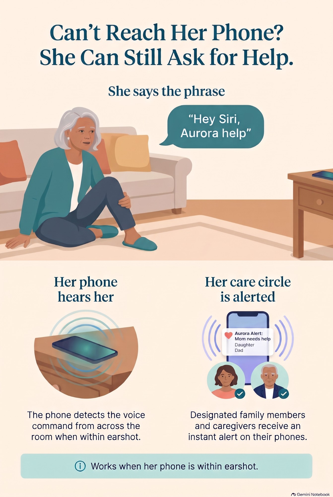

◷
Daily view
Vitals, trends, meds, labs, and visits in one care rhythm.
For family
In the app, the family members and caregivers your parent chooses are called Angels. They see changes, receive alerts, and help your parent take the right next step.
Vitals, trends, meds, labs, and visits in one care rhythm.
Examples: abnormal vitals, falls, safe-zone breach, and voice-triggered help.
Examples: BP rising, weight trending up, changing vitals, medication misses.
See medication misses and patterns that need follow-up.
Know when a parent wanders outside a trusted area.
Propose medication, doctor, or lab follow-up steps.
See change while there’s still time to talk it through.
Angels are notified when help is needed.
Aurora Care supports both: see change early and alert quickly when they need help right away.
